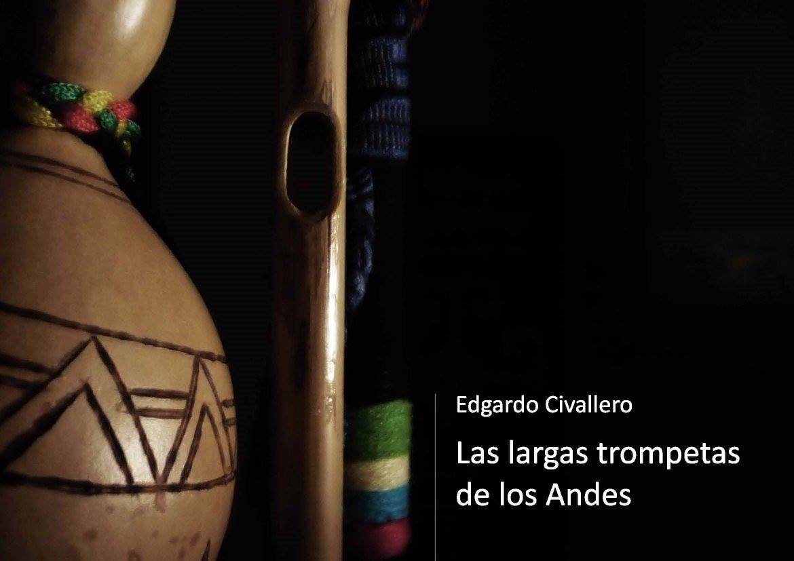

Las largas trompetas de los Andes
Inicio > Libros digitales sobre música. Serie 1 > Las largas trompetas de los Andes
Cómo citar este trabajo: Civallero, Edgardo (2025). Las largas trompetas de los Andes. Edición de archivo. Bogotá: El Zorro de Abajo Editora.
Descargar en PDF.
Este libro constituye un estudio amplio y documentado sobre los aerófonos naturales de gran tamaño en Sudamérica, particularmente aquellos asociados a las culturas andinas desde Ecuador hasta la Patagonia. Basado en fuentes arqueológicas, etnográficas, organológicas y sonoras, el texto traza una genealogía de estos instrumentos y reconstruye su papel ritual, agrícola y simbólico en los sistemas musicales tradicionales del continente.
El volumen inicia con una descripción técnica y teórica de las trompetas naturales, analizando su morfología —cuerpo, embocadura y pabellón amplificador— y detallando las limitaciones acústicas y expresivas que derivan de su estructura. Subraya además cómo los intérpretes andinos transformaron esa aparente simplicidad en una estética sonora propia basada en la tensión labial, la modulación del soplo y la alternancia rítmica. De esta manera, los pueblos de la cordillera desarrollaron una música de enorme potencia ritual, vinculada a los ciclos agrícolas y a las celebraciones comunitarias.
El estudio recorre los Andes de norte a sur, describiendo en detalle las variantes locales. En Ecuador, las bocinas o quepas aparecen entre pueblos quechua-hablantes como los Kañari y los Salasaca. Se elaboran con caña, guarumo o penco, y pueden alcanzar dos metros de largo. Su función principal no es musical sino comunicativa: sirven para convocar a la comunidad durante la siega o las festividades del Inti Raymi. En Perú se encuentra el famoso clarín de Cajamarca, de hasta cinco metros, cuyo cuerpo de carrizo y pabellón de calabaza lo convierten en uno de los instrumentos más monumentales del continente. Usado en faenas agrícolas y ceremonias, el clarín fue declarado Patrimonio Cultural del Perú en 2008.
Otras variantes peruanas incluyen el huarajo de Ayacucho y Huancavelica, la pampa corneta, la soqos, y el célebre waqra-phuku o "trompeta de cuernos", construido con astas de vaca unidas en espiral, símbolo de las festividades ganaderas de los Andes centrales. A ellas se suman la mamac y el erque de caña o metal, la kañari y la puku, cada una asociada a contextos rituales específicos, sobre todo las fiestas de marcación de ganado. Se evidencia la continuidad entre estos aerófonos y los antiguos instrumentos prehispánicos hallados en cerámica o metal, mostrando una línea de transmisión técnica y simbólica que sobrevivió al periodo colonial.
En Bolivia se describe el tira tira del norte de Potosí, elaborado con madera ahuecada y un pabellón de cuernos en espiral, e interpretado durante los tinkus y carnavales mineros; y el wakar'anti del pueblo Ava, una trompeta de caña y asta vacuna que participa en el Arete guasu, la "fiesta grande" del Carnaval. En Tarija, la caña chapaca —hecha de caña de Castilla y pabellón de cuero de cola de vaca— se erige como emblema sonoro del mestizaje regional. Su uso se restringe al periodo seco del año, de Pascua a Todos los Santos, siguiendo la antigua regla andina que asocia el sonido de las trompetas a un determinado periodo del año.
El recorrido continúa por el noroeste argentino, donde la corneta o erque conserva un linaje directo con la caña tarijeña. De tres a siete metros de largo, este instrumento monumental acompaña procesiones, misachicos y danzas de suris o plumudos. El sonido bronco y grave de la corneta simboliza la voz de la tierra; su ejecución está cargada de tabúes: tocarla fuera de temporada puede atraer heladas o granizo, según la creencia popular. Estas prohibiciones son parte de una ética sonora ancestral que regula la relación entre música, clima y fertilidad.
En Chile se encuentra el clarín atacameño de caña, sin pabellón y cubierto con lana, utilizado en los ritos de limpieza de canales (cauzulor y talatur) de los Lickan Antay, en donde el agua liberada simboliza la fecundidad de la tierra. La música de los clarines acompaña cantos en lengua kunza, vestigio de una cosmovisión desaparecida. Más al sur, entre los Mapuche, la trutruka se erige como uno de los instrumentos rituales más complejos y emblemáticos: una trompeta de colihue y cuerno de vaca que puede alcanzar hasta seis metros. Construida artesanalmente, sellada con tripa de potro y cubierta de lana, la trutruka resuena durante el ngillatun y el kamaruko, ceremonias de rogativa que articulan el mundo espiritual y territorial mapuche. Junto a ella aparece el ñolkiñ, una pequeña trompeta hecha de un tubo vegetal o metálico que se toca mediante aspiración de aire, técnica única en el continente.
A lo largo de la obra se identifican patrones formales —tubos de caña o madera, embocaduras laterales, pabellones de cuerno o calabaza— y funciones rituales comunes: convocatoria, protección de los cultivos, comunicación con los espíritus o celebración de los ciclos estacionales. Se muestra además cómo estos instrumentos, a pesar de su aparente marginalidad, condensan cosmologías enteras: el soplo como principio vital, el sonido como puente entre mundos, y la materia vegetal o animal como extensión del cuerpo humano.
Las trompetas andinas constituyen una tradición sonora panregional que ha sobrevivido a la colonización, la cristianización y la modernidad mediante procesos de adaptación y resemantización. Hoy coexisten versiones rituales, campesinas y urbanas, construidas con plástico, metal o caucho, sin perder su carga simbólica original. Existe, así, una continuidad de una misma voz ancestral —el grito vibrante de los Andes— que desde hace milenios convoca lluvias, fiestas y memorias.